A Simulação de Tribunais Constitucionais reproduz um julgamento perante o Supremo Tribunal Federal. Ao longo de suas etapas, os participantes exercem as funções de Ministros, Advogados do Requerente, Advocacia-Geral da União e Procuradoria-Geral da República, conduzindo integralmente a apreciação de uma ação de controle concentrado de constitucionalidade.
Dezessete edições até 2021. Gerações de estudantes do Curso de Direito da UFRN na tribuna. Em 2026, a Simulação volta pelas mãos da LATS.
O que o Plenário decidiu em cada edição e quem se destacou na tribuna.
Ex-participantes da Simulação contam como a experiência na tribuna marcou suas trajetórias na magistratura, na advocacia e na academia.
Onze Ministros julgam a ação. Três litigantes, com quatro integrantes cada, ocupam a tribuna para sustentar suas posições.
Do edital à Sessão de Julgamento.
Encontros com quem atua nas Cortes, para preparar os debates e a construção das teses.